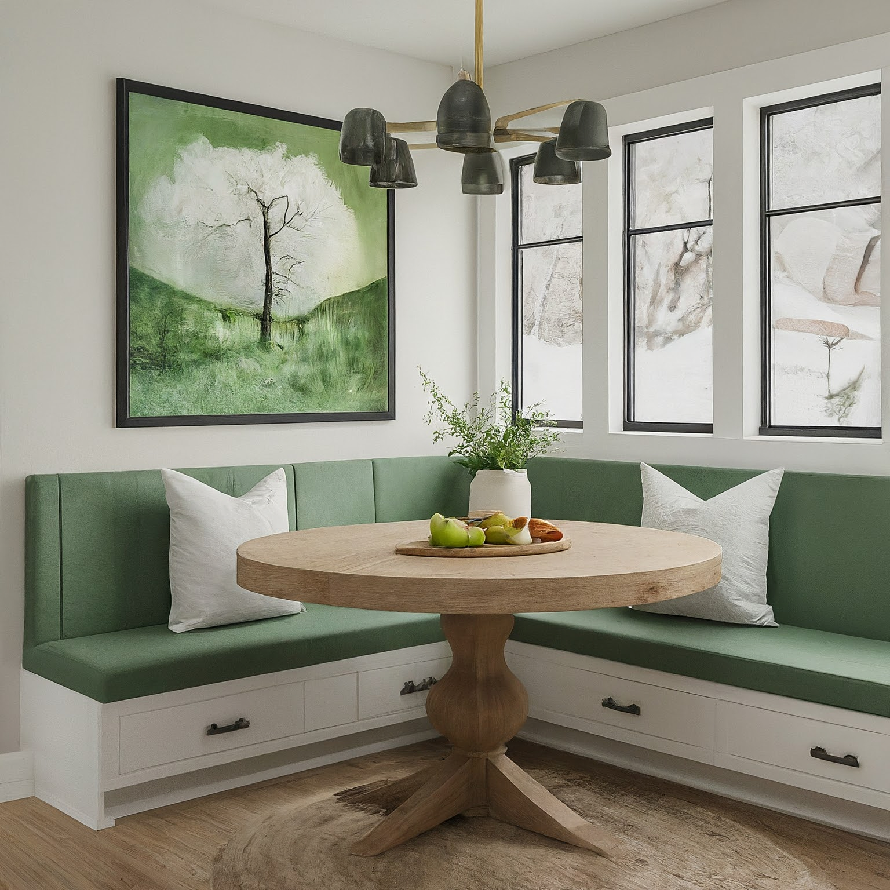

Modern Farmhouse Breakfast Nook: Greens & Whites

Modern Farmhouse Breakfast Nook: Greens & Whites
1. Overall Concept and Style:
This breakfast nook will embody the essence of Modern Farmhouse style – a blend of clean, contemporary lines and the warmth and rustic charm of traditional farmhouse elements. We aim to create a cozy and inviting space that feels both stylish and comfortable. The design will emphasize natural light, simple textures, and a calming atmosphere. The greens and whites color palette will evoke a sense of freshness and tranquility, reminiscent of a peaceful countryside morning. The key is to balance modern minimalism with farmhouse functionality and comfort.
2. Color Scheme and Materials:
-
Primary Colors:
- White: Used extensively on walls (likely shiplap or paneled), trim, and some furniture pieces to create a bright and airy foundation. We'll use varying shades of white, from crisp bright white to warmer off-whites (e.g., Simply White by Benjamin Moore) to add depth.
- Green: A soft, muted green will be the accent color. Think sage green, olive green, or a subtle eucalyptus tone. This will be incorporated through upholstery, paint on accent furniture (like a hutch or bench), and decorative accessories. We can incorporate lighter tints or deeper shades within the green family.
-
Materials:
- Wood: Reclaimed wood or wood with a distressed finish will be used for the table, bench seat, or shelving to add a rustic touch. Consider wood species like oak, maple, or pine.
- Fabric: Natural fabrics like linen, cotton, and canvas will be used for upholstery and window treatments. Consider incorporating some textures like subtly striped linen or woven fabrics.
- Metal: Black or brushed nickel hardware will be used for lighting fixtures, furniture legs, and other details. Consider matte finishes to avoid a harsh contrast.
- Ceramic: Rustic ceramic tiles or a handmade ceramic vessel can be incorporated for a subtle farmhouse touch.
- Shiplap/Board and Batten: Adding shiplap on one wall or using board and batten paneling will inject a classic farmhouse feel.
3. Furniture and Layout:
4. Lighting Design:
5. Decorative Elements:
6. Practical Considerations:
- Durability: Choose durable materials that can withstand everyday use, especially for the table and seating. Consider stain-resistant fabrics for upholstery.
- Cleanability: Opt for surfaces that are easy to clean, such as wipeable tabletops and washable cushion covers.
- Storage: Incorporate storage solutions to keep the space organized and clutter-free. Built-in storage under the bench seating or a small hutch can be very useful.
- Traffic Flow: Ensure that the layout allows for easy movement around the table and seating area.
- Lighting Control: Use dimmable lighting to adjust the brightness based on the time of day and the mood you want to create.
- Window Treatments: While maximizing natural light is a goal, ensure window treatments provide sufficient privacy and sun protection.
- Scale: Ensure that all furniture and accessories are appropriately sized for the space. Avoid overcrowding the nook.
- Electrical Outlets: Plan for convenient access to electrical outlets for charging devices or using small appliances.
This design concept provides a solid foundation for creating a beautiful and functional modern farmhouse breakfast nook. Remember to personalize the design to reflect your own style and preferences. By carefully selecting materials, colors, and accessories, you can create a space that is both stylish and inviting.